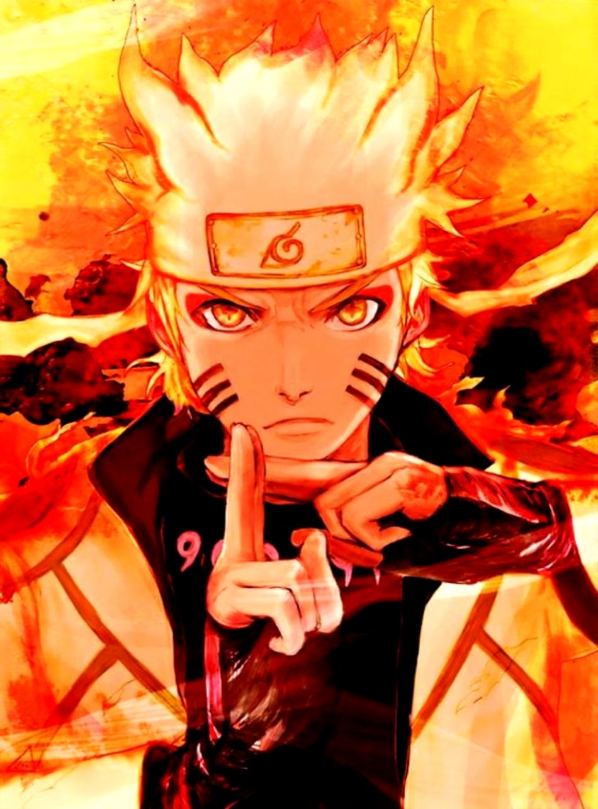
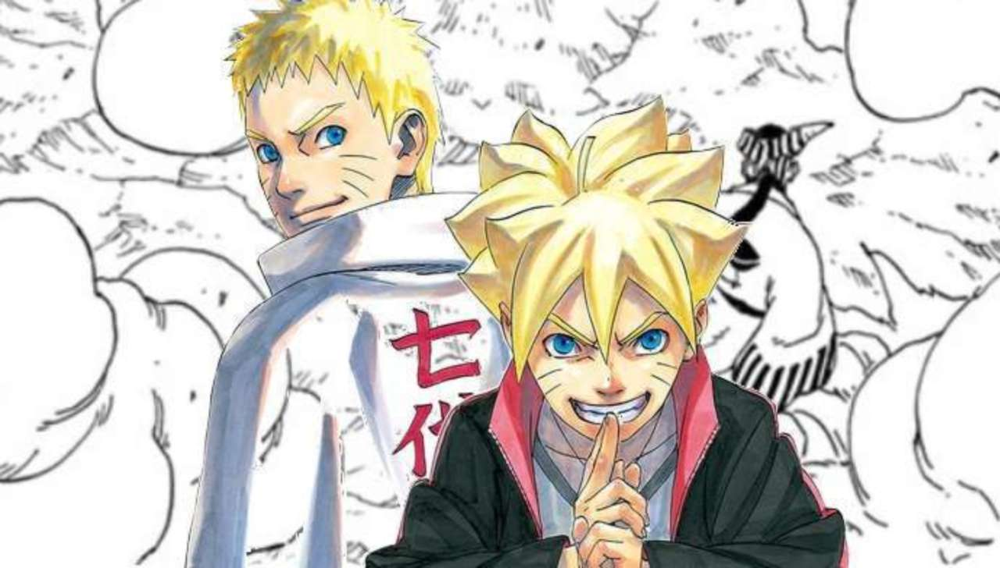
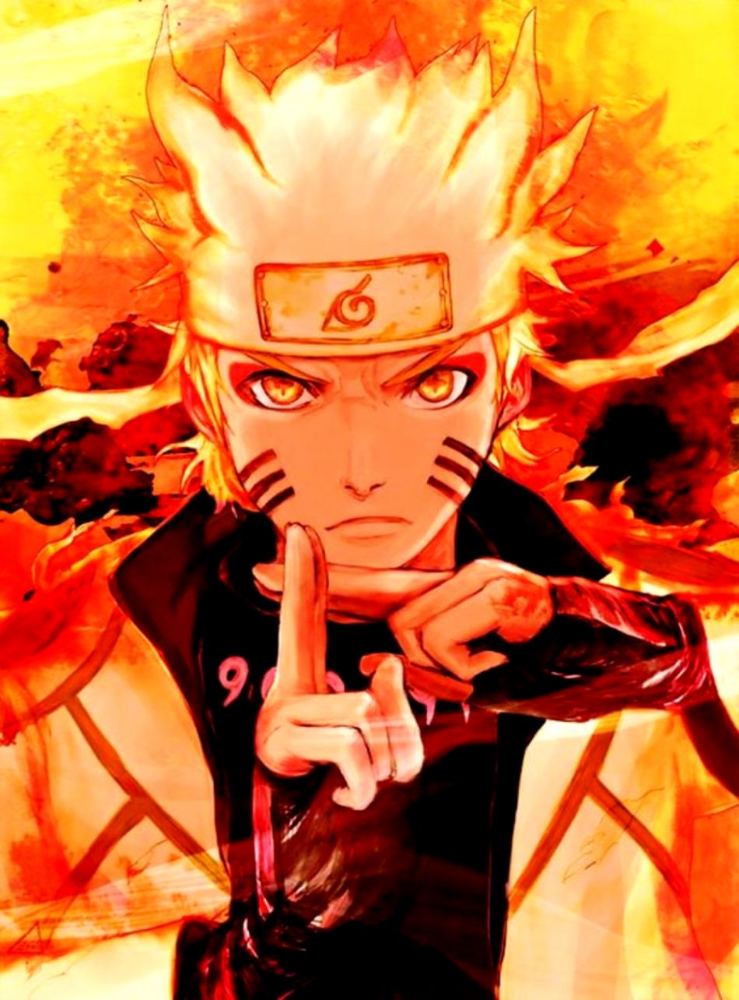
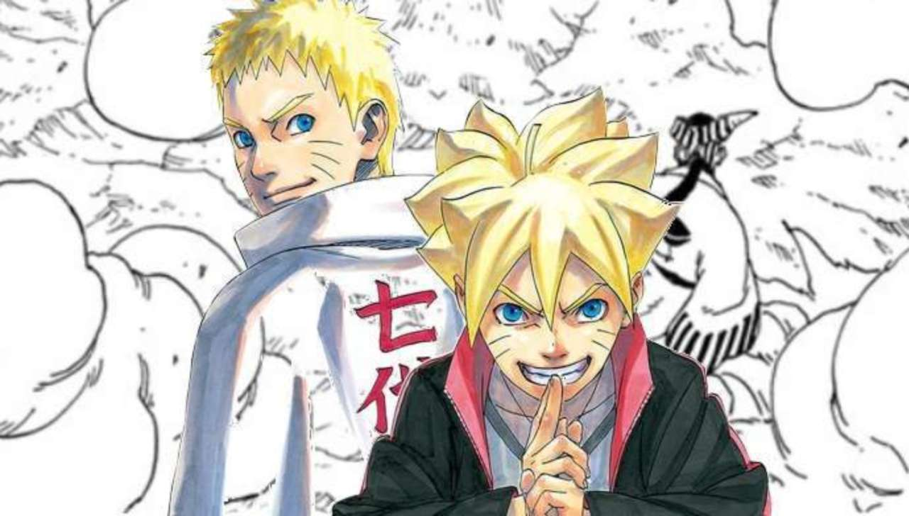

1.The anime has considerably less blood than its manga counterpart.
2.One of the most obvious differences between the manga and anime is
that the manga doesn't have any filler story arcs, while the anime has
plenty. 3.After the war arc towards the end of Naruto: Shippuden, a
funeral was held for everyone who died during the war. Whereas in the manga,
the funeral was specifically held for Neji. Most fans appreciated that
the funeral was expanded to better pay respects to all characters who
perished on or off-screen during the epic final war arc.
4.One other major difference between the anime and manga was the
copious use of flashbacks.In some episodes of the show, you would
only get around ten minutes of new content. 5.The final fight between
Sasuke and Naruto in Shippuden is often one of the most well-remembered
of the entire series. That said, the anime did make some changes from the manga.
For instance, in the anime, Naruto had several visions of Sasuke from the past
that weren't shown in the manga.
About The Anime
Naruto: Shippūden (NARUTO -ナルト- 疾風伝, Naruto Shippūden, Literally meaning: Naruto Hurricane Chronicles)
is the anime adaptation of Part II of the manga, set two-and-a-half years after Naruto Uzumaki leaves
Konohagakure to train with Jiraiya.The series had 500 episodes, which originally aired in Japan on
TV-Tokyo from 2007 until 2017.
Boruto: Naruto Next Generations (BORUTO -ボルト- -NARUTO NEXT GENERATIONS-, Boruto: Naruto Nekusuto Jenerēshonzu) is
a monthly manga series written by Ukyō Kodachi and illustrated by Mikio Ikemoto, which is supervised by original
manga creator Masashi Kishimoto, who also defines every concept and initial idea. The series serves as the official
continuation of the Naruto franchise.[1] It adapts the story-line of Boruto: Naruto the Movie and then continues the
story afterward. The manga launched on May 9, 2016, in the 23rd issue of Weekly Shōnen Jump, and is simultaneously
published in Weekly Shonen Jump digital magazine in English. The serialisation of the manga was transferred to
V Jump in July 2019.
 


